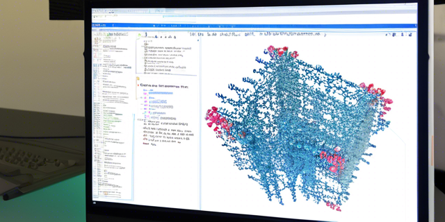

DockQ로 도킹 모델 품질 측정하기

DockQ 는 단백질, DNA 및 저분자 화합물 도킹 모델에 대한 품질을 측정하는 도구입니다. DockQ 점수는 0 에서 1 까지의 범위로 측정되며 품질은 아래와 같이 정의됩니다.
0.00 <= DockQ < 0.23 - 부정확한 모델
0.23 <= DockQ < 0.49 - 허용 가능한 품질의 모델
0.49 <= DockQ < 0.80 - 중간 품질의 모델
0.80 <= DockQ < 1.00 - 고품질의 모델1 설치
공식 리포에서는 가상환경을 사용하지 않고 pip 명령어를 바로 사용하는데 그건 최악의 방법입니다. 나중에 생기는 의존성 문제를 피하기 위해서는 먼저 가상환경을 생성하고 설치해야 합니다. 아래 두가지 방법을 추천합니다.
numpy >= 2.0 버전을 설치하면 오류가 발생하기 때문에 1.23.4 버전을 사용하세요.
1.1 pixi 를 사용하는 방법
git clone https://github.com/bjornwallner/DockQ/
cd DockQ
pixi init .
pixi add "python=3.9.1"
pixi add "numpy=1.23.4"
pixi shell1.2 uv 를 사용하는 방법
git clone https://github.com/bjornwallner/DockQ/
cd DockQ
uv venv venv
source venv/bin/activate
(venv) uv pip install numpy==1.23.4
(venv) uv pip install .2 DockQ 사용법
설치를 완료하면 아래의 명령어로 DockQ 를 실행할 수 있습니다.
pixi run DockQ <model> <native>2.1 명령어 예시
하나 이상의 인터페이스가 있는 모델/원형 단백질 복합체에서 DockQ 를 실행하면 각 인터페이스에 대한 결과를 얻을 수 있습니다. 결과는 모든 인터페이스에서 평균을 최대화하도록 계산됩니다:
pixi run DockQ examples/1A2K_r_l_b.model.pdb examples/1A2K_r_l_b.pdb플래그 --short 를 사용하면 더 간결한 출력을 볼 수 있습니다.
2.2 단백질 - 단백질 결합 스코어링
기본적으로 DockQ 는 원본 인터페이스와 모델에 있는 인터페이스 간에 최적의 매핑을 찾으려고 시도합니다.
가장 간단한 경우는 호모다이머가 모델링된 경우입니다. 그런 다음 원본의 인터페이스 AB(원래 체인 A 와 B 사이) 를 모델 AB 인터페이스와 비교할 수 있지만 체인의 순서를 변경하면 일반적으로 결과가 변경 되므로 BA 와도 비교할 수 있습니다. DockQ homodimer_model.pdb homodimer_native.pdb 명령어를 입력하면 소프트웨어가 가장 높은 DockQ 점수를 가진 매핑 (AB -> AB 또는 AB -> BA) 값을 출력합니다.
사용자가 특정 매핑을 적용하려면 --mapping 플래그를 사용할 수 있습니다. 이는 예를 들어 모델/원형에 많은 수의 상동 (homologous) 사슬이 포함되어 있는 경우 계산 속도를 높일 수 있어 유용합니다.
2.2.1 완전 매핑
사용자는 원본 체인과 모델 체인 간의 전체 매핑을 정의합니다: --mapping MODELCHAINS:NATIVECHAINS. 예를 들어, 앞의 경우 두 가지 가능한 매핑이 있을 수 있습니다:
--mapping AB:AB(원본 체인 A 는 모델 체인 A 에, 원본 체인 B 는 모델 B 에 해당)--mapping AB:BA(원본 체인 A 는 모델 체인 B 에, 원본 체인 B 는 모델 A 에 해당)
콜론 : 앞의 쌍은 모델에서 체인 순서를 정의하고, 뒤의 쌍은 원본에서 순서를 정의합니다.
2.2.2 부분 매핑
사용자가 매핑의 일부를 수정하고 나머지는 DockQ 가 최적화하도록 하려는 경우 와일드카드를 사용할 수 있습니다. 예를 들어, 테트라머에 모델에 ABCD 체인이 있고 원본에는 WXYZ 체인이 있는 경우 아래 명령어를 사용합니다.
--mapping A*:W*여기서 와일드카드 * 는 DockQ 가 A -> W 를 고정된 상태로 유지하면서 BCD 와 XYZ 사이의 매핑을 최적화해야 함을 나타냅니다. 두개의 체인을 고정하는 경우는 아래 명령어를 사용합니다.
--mapping AD*:WY*2.2.3 원본 인터페이스의 하위 집합으로 검색 제한하기
사용자가 원본 인터페이스 중 하나 이상의 특정 인터페이스에 관심이 있고 나머지는 무시해야 하는 경우 다음 명령어를 사용합니다.
--mapping *:WX그러면 DockQ 가 모델에서 네이티브의 WX 인터페이스와 가장 잘 일치하는 인터페이스를 찾습니다. 여러 원본 인터페이스를 사용하는 경우 명령어는 아래와 같습니다.
--mapping *:WXY2.3 단백질 - 저분자 화합물 결합 스코어링
단백질과 동일한 방식으로 PDB 또는 mmCIF 파일의 저분자를 스코어링하고 매핑을 최적화할 수 있습니다. --small_molecules 플래그를 추가하기만 하면 됩니다:
# 헤모글로빈 사슬(네이티브의 사슬 A와 B)과 HEM 및 PO4 그룹(사슬 E, F, G)의 도킹을 비교합니다.
$ DockQ examples/1HHO_hem.cif examples/2HHB_hem.cif --small_molecule --mapping :ABEFG --short저분자에 대해서는 LRMSD 값만 출력됩니다.
참고로 저분자 화합물은 PDB/mmCIF 파일에 포함되어야 합니다. 또한 별도의 체인 식별자가 있어야 합니다 (mmCIF 파일에서는 label_asym_id 필드가 사용됩니다).
2.4 단백질 - DNA/RNA 결합 스코어링
DNA 와 관련된 인터페이스는 단백질 인터페이스와 마찬가지로 똑같이 점수가 매겨집니다. 단백질-DNA 또는 DNA-DNA 인터페이스에 대해서는 단백질-단백질 인터페이스와 동일한 방식으로 DockQ 점수가 계산됩니다. 이중 나선 사슬의 경우 두 개의 DockQ 점수가 출력됩니다.
3 다른 기능들
사용 가능한 명령어에 대한 목록을 보려면 -h/--help 와 함께 DockQ 를 실행하세요.
3.1 파이썬 모듈로 DockQ 사용하기
DockQ 를 설치한 후에는 파이썬 코드에서 모듈로 사용할 수도 있습니다.
from DockQ.DockQ import load_PDB, run_on_all_native_interfaces
model = load_PDB("examples/1A2K_r_l_b.model.pdb")
native = load_PDB("examples/1A2K_r_l_b.pdb")
# model:native 체인에 대한 인터페이스를 딕셔너리 형태로 매핑
chain_map = {"A":"A", "B":"B"}
# 결과는 딕셔너리 형태로 반환.
run_on_all_native_interfaces(model, native, chain_map=chain_map)3.2 단일 수용체 또는 리간드에 여러 사슬 병합하기
여러 개의 사슬 (예를 들면 항체의 중쇄와 경쇄 사슬) 을 단일 수용체 또는 리간드로 병합하려면 이슈 #33 을 참고하세요.
4 참고 사항
4.1 인용하기
DockQ 를 사용하는 경우 아래 프리프린트를 인용하세요.https://doi.org/10.1101/2024.05.28.596225
4.2 pixi 의존성 파일
[tool.pixi.project]
channels = ["conda-forge"]
platforms = ["linux-64"]
[tool.pixi.pypi-dependencies]
dockq = { path = ".", editable = true }
[tool.pixi.dependencies]
numpy = "1.23.4.*"
python = "3.9.1.*"
biopython = ">=1.84,<2"
jupyterlab = ">=4.2.4,<5"